Project Zero 记录
我感到我的大脑在拒绝Project Zero——要接触的陌生的东西太多了，我害怕困难，害怕露馅。但我究竟在害怕什么？Project Zero的目的不就是为了露馅，把自己的几斤几两全部暴露出来吗？
所以，带着全部的乐趣，去画吧，这是计划开始的第一个真正的任务，它应当像游戏一样，放轻松地来，并且，学会享受过程！
但还是得定要求吧，要求是上色的，有透视场景，有主角的图。（funny）
我想画惠惠和小玉（虽然并非他特别磕这对吧，但她们的互动想想就非常有趣），平行世界，考虑：悄悄在餐厅打工的惠惠遇上不知情来吃饭的小玉，去画出惠惠害羞遮掩的样子，小玉讪笑不知所措的样子。整体氛围要诙谐一点。
关于穿着，本想给惠惠画正统女仆服的，但又觉得其实和风女仆服更适合她。我特别喜欢惠惠总是一幅天不怕地不怕的，想挑事儿的表情，但面对小玉的话她是不会做出这种表情的hhh。小玉的话则是……水手服吧，但标志性的海军帽是不能丢的。（结果我没画帽子hh）
在画草图之前，先定一下俯视图，定一下镜头位置，镜头相对较远，保证透视不大……但看画面效果调整吧。
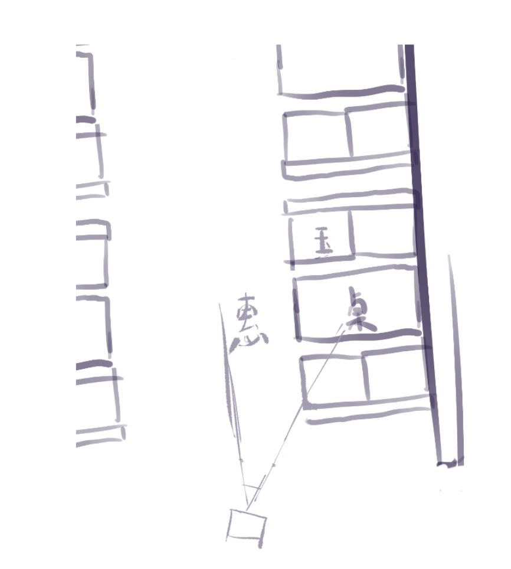
镜头准备是稍微朝下的，但不画三点透视，所以本质上是做了裁剪，让视平线居于画面上部。
然后是透视草图，这幅图的第一主角是惠惠，惠惠的头正好是场景消失点附近的位置，场景的线条应该能够引导视线。话说回来，我先画出来再说这个啊！
其实画完草图发现我不如直接用一点透视啦。
画半天画来个这个，其中灰色的部分是期待的实际的画面，这是采取K大说的“上帝视角”的方法，据称把镜头外面的东西也画出来有助于理解画面：
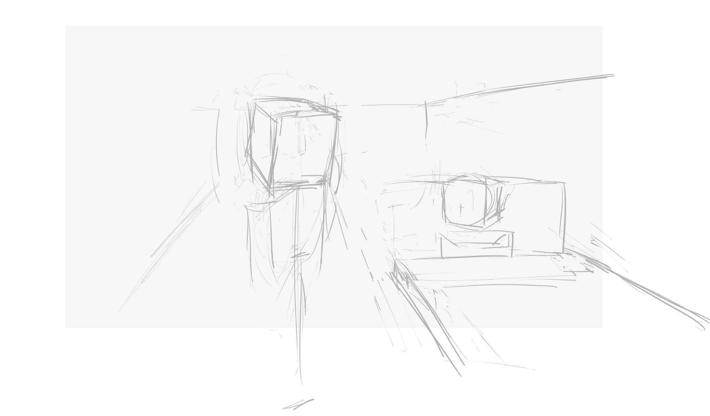
调整半天，我想让惠惠在画面中占更大比例，但意识到我必须把镜头挪近一些，让透视更大了，而且我必须做更大的裁剪了（但我怀疑这点我后面可能给它改回去）：
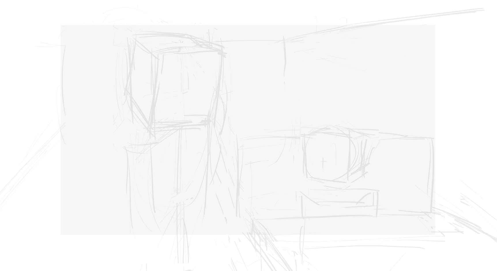
这里把透视大概是定好了……虽然觉得可能会回炉。然后再精细一点：
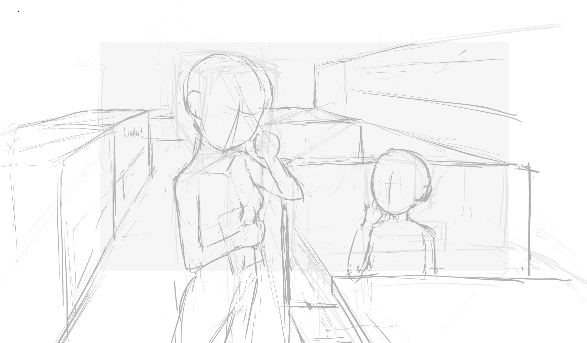
画面左边有点空隙，我在考虑要不要安排一个月歌探头。
以及，桌子右侧该放点什么东西……我想这是一个很高的屏风来着，又想放玻璃，但放玻璃的话外面我可不知道画啥啊。
接下来该是草稿了……把角色，服饰都给弄出来。这里需要找参考了：
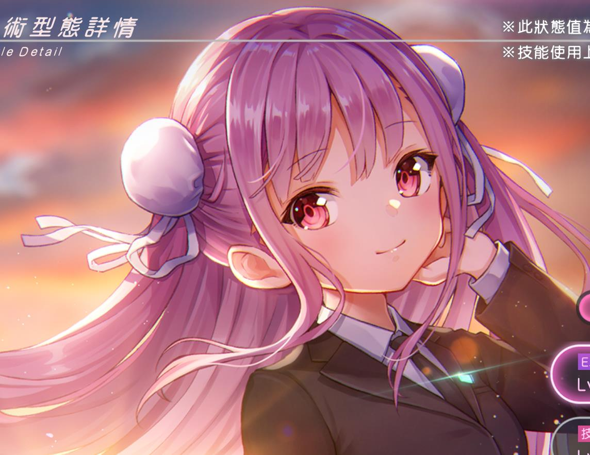
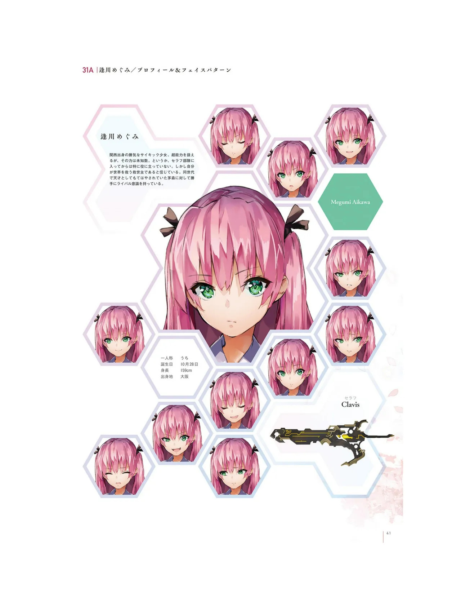
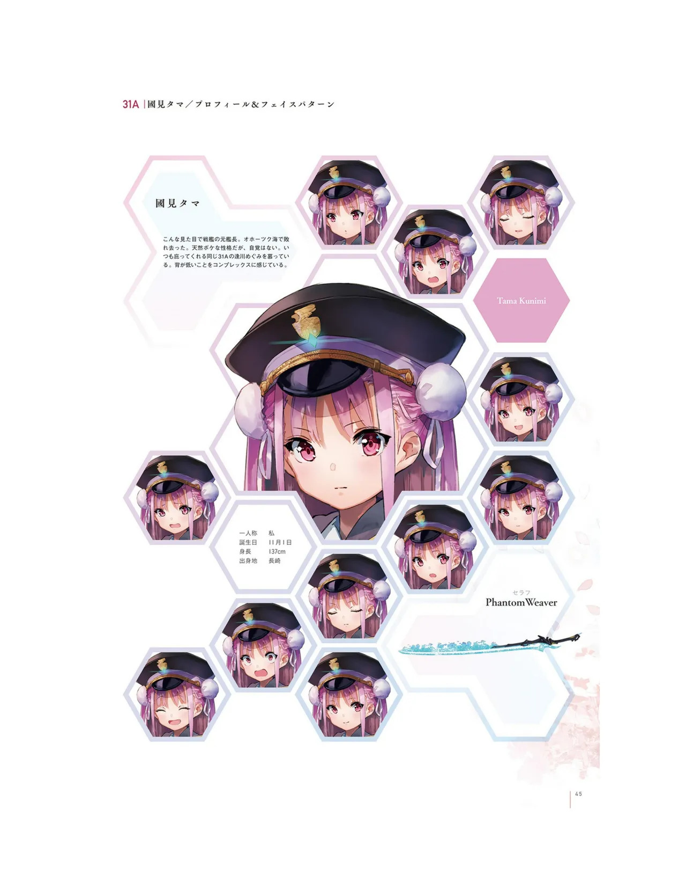
然后，第一天的成果只画了个惠惠的大头：
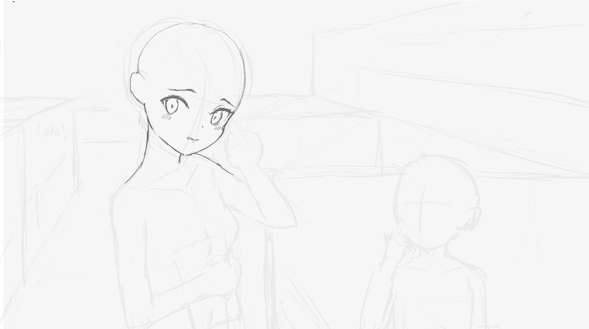
但加了头发后就不可爱了……后面要研究一下为何不可爱，我猜测刘海和头型有点没对上？
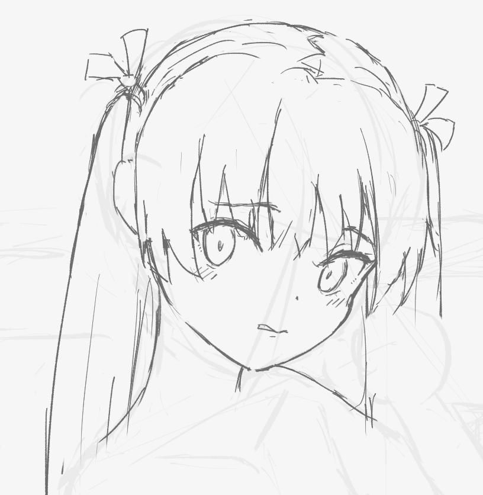
第二天继续！实际上我能意识到这第二天我肯定是画不完了，除非我从早到晚啥都不干光画它，但实际上我画的时候，emo的时候，卡住的时候，会脚底抹油跑去研究其他东西……头疼。
继续，细化惠惠的服饰，我故意把花边画得更大一些，因为觉得这样更可爱和有存在感一些。
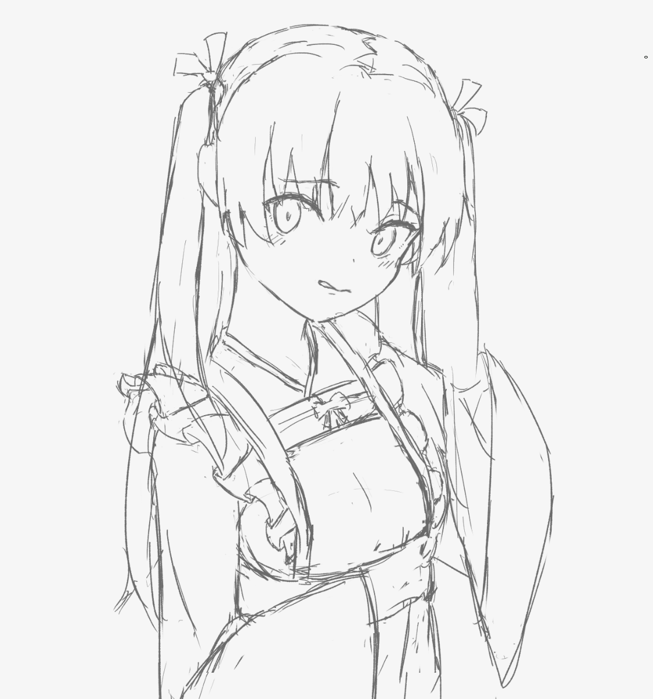
然后是难点了………………手，tmd手啊。左手比较复杂，但发现这个角度我用自己的手可以比出来，右手比较简单，随便画画了。哎，这一下子就暴露出一堆问题来，让我感觉我之前老纠结在透视上非常愚蠢——明明值得做的专题研究一箩筐。
这真就像编程时写项目了，这里这里不会那里那里不会，然后就去具体问题具体分析，零敲牛皮糖逐个击破。
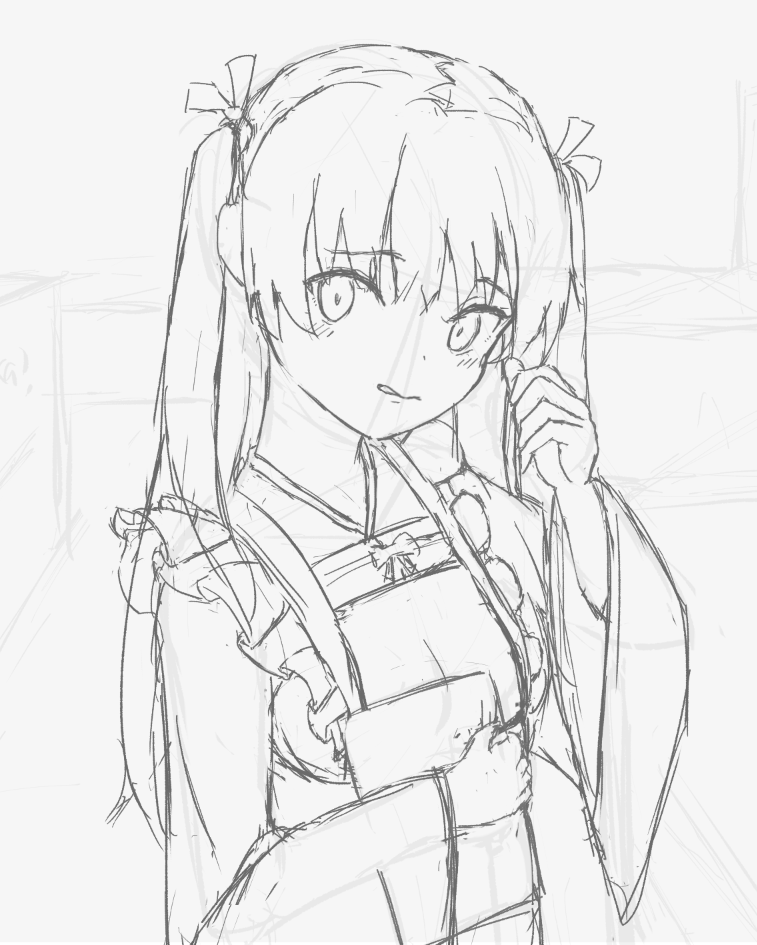
然后是小玉，我想画一个尴尬的讪笑的表情，但还蛮难表现的，关于眼睛，本想试试半睁但不知道怎么表现，结果参考设定集的表情完全闭上了。顺便发现自己不知道如何控制眼睛的看的方向，这个得专门研究。同时也不知道脸上的汗水如何去表现，同样需要研究。
显然，我后面得专门去训练表情集——既是大头turnaround的训练，也是五官，表情的学习。
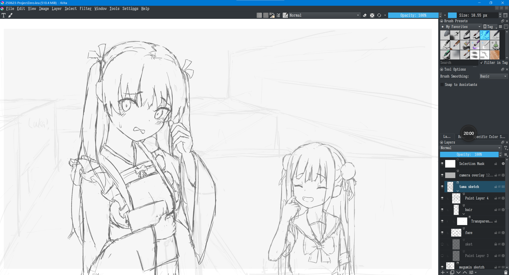
就这样啦，关于背景和线稿和上色我没什么头绪，这次先不画了，而且也是没时间了，重点在于收获了很多问题：
- 关于透视，关于草图的起法，我是先定俯视图再定内容的，这可能不是个好的选择，按理说应当是定好构图后（这一步是二维的）直接起草图。以及起了草图后对镜头，人物的安排几经修改（搞得实际上我之前想表达的很多东西都没能表达出来）……而我觉得我现在连问题出在哪里都没有好好描述清楚。好在Krenz的透视课程可以说就是专门是关于透视草图的起法的
- 关于角色，五官、头发、表情还有诸多可以研究的地方，我很多是照着立绘直接抄的，没能发挥主观能动性。以及头发我画着画着总是忘记用空间思维去思考，比如小于的头发我第一次画了个俯视感觉的头发，然而应当是平视
- 然后就是各种小问题了：
- 蕾丝边
- 和服的结构
- 水手服的结构
- 衣服的褶皱，软硬的表现……（我全凭感觉的现在）
- 蝴蝶结的画法
- 手的结构
不亏！接下来就是根据Krenz的课程和drawabox来了！这个Project Zero就到这里了，但这究竟是封笔还是仅是checkpoint，看后面的实践吧。
但也要明确——这一幅我画了两天，真正作画时间只有三个半小时，或许这才是面临的最大问题——时间控制的问题。
本博客所有文章除特别声明外，均采用 CC BY-NC-SA 4.0 协议 ，转载请注明出处！